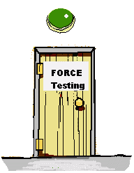

Wind Tunnel Laboratory
This is where the aerodynamic testing is carried out. Our technical expert, Susan (BSc,PhD), is here to help you through the necessary steps in undertaking a successful test program. Follow any instructions as set out below.
Test Options:
Look in the 'shed' to see what sections are available for testing.
|

Go to the 10m x 8m Tunnel for setting up 2D and 3D straight wings for Lift, Drag and Pitching Moment measurements
|
Go to the 1m x 8m 2D flow Tunnel for Aerofoil Section pressure distributions.
|
|
|